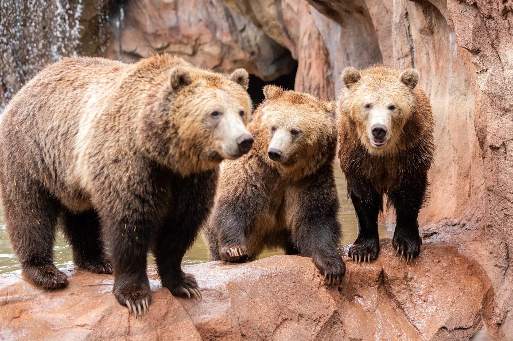
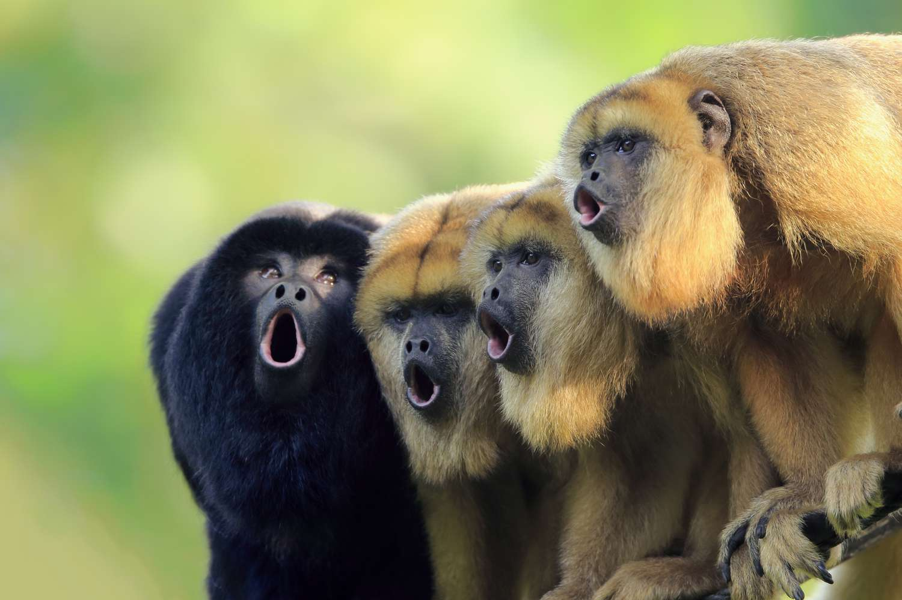
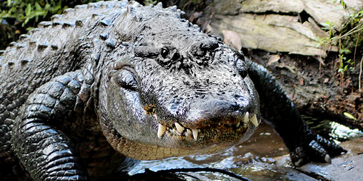

Introducing...
Bears
- Ollie
- Mona
Fun Fact- Brown bear cubs are born the size of a chipmunk.
Click here to learn more about bears!Giraffes

- Frankie
- Coconut
Did you know? Giraffes only need to drink once every few days. Most of their water comes from all the plants they eat!
Read to learn more!Lions
- Mella
- Karl
Did you hear? Lions are the only known cat species where individuals roar together - with even young cubs joining in with their mews. The calling sequence usually lasts about 40 seconds.
Learn more!Monkeys
- Cookie
- Earl
- Banana Pudding
Howler monkeys are the loudest monkeys (and the loudest land animal) and can be heard from up to 3 miles away.
Read to learn more!Alligators
- Wren
- Aspen
- Mike
Alligators can be differentiated from true crocodiles by the form of their jaw and teeth. Alligators possess a broad U-shaped snout and have an “overbite”; that is, all the teeth of the lower jaw fit within (are lingual to) the teeth of the upper jaw.
Watch to learn more!